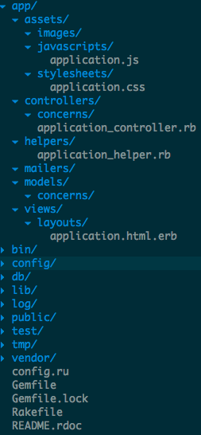

| z, ? | toggle help (this) |
| space, → | next slide |
| shift-space, ← | previous slide |
| d | toggle debug mode |
| ## <ret> | go to slide # |
| c, t | table of contents (vi) |
| f | toggle footer |
| g | toggle follow |
| r | reload slides |
| n | toggle notes |
| p | run preshow |
| P | toggle pause |
| s | choose style |

3.times { puts "Meee!!" } 3.class #=> Fixnum
3.0.class #=> Float
"Hello".class #=> String
'hi'.class #=> String
# Special values are objects too
nil.class #=> NilClass
true.class #=> TrueClass
false.class #=> FalseClass class String
def palindrome?
self == self.reverse
end
end name = "manish"
age = 24
height = 60.7 name = 'manish'
welcome = "Welcome, " + name
#=> Welcome, manish
welcome = "Welcome, #{name}"
#=> Welcome, manish
welcome = "Welcome, " + 3
#=> TypeError: can't convert Fixnum into String
welcome = "Welcome, " + 3.to_s
#=> Welcome, 3
welcome = "Welcome, #{3}"
#=> Welcome, 3 :name
:email array = [1, 2, 3, 4, 5]
array = ["hello", 27, [10, 20]]
array[0] #=> "hello"
array << 30 h = {user: 'girish',
email: 'girish@cuberoot.in'}
h['mobile']= '98232372321'
h[:email] h = {:user => 'girish',
:email => 'girish@cuberoot.in'} if 1 == 0
"impossible"
elsif 1 == 1
"now you're talking"
end "now you're talking" if 1 == 1 i = 10
"non-zero" unless i == 0 case 11
when 0..10
"tens"
when 10..20
"twenties"
when 20..30
"thirties"
else
"lots"
end for e in [1, 2, 3] do
puts e * 2
end def square(n)
return n * n
end
square(2) #=> 4
square 3 #=> 9 def sum(x, y)
x + y #=> implicit return
end
sum 2, 5 #=> 7 class Car
@@wheels = 4 # class variable
def initialize(make, c)
@make = make # instance variable
@color = c
end
def move(to) # instance method
"moved to #{to}"
end
end class Car
def name=(name) # Basic setter method
@name = name
end
def name # Basic getter method
@name
end
def self.engine # Class method
"Four Stroke"
end
attr_accessor: color
attr_reader: make
end zen = Car.new("Maruti", "red")
zen.move "Pune" #=> parenthesis are not necessary
zen.make = "Maruti Zen" #=> NoMethodError: undefined method `make='
zen.name = "My Car!" class SuperCar < Car
def fly(to)
"flew to #{to}"
end
end
super_car = SuperCar.new "Super", "golden"
super_car.make #=> "Super"
super_car.fly "New York" #=> "Flew to New York"
super_car.move "Boston" #=> "Moved to Boston" module API
def fetch
HTTP.get('http://example.com/cars/:id', :id => id)
end
end class Car
include API
end
i10 = Car.new "Hyundai", "grey"
i10.fetch #=> calls API#fetch method class Car
extend API
end
Car.fetch #=> calls API#fetch method def div
puts "<div>"
puts yield
puts "</div>"
end
def p
puts "<p>"
puts yield
puts "</p>"
end
div do
p {"paragraph 1"}
p {"paragraph 2"}
end [1, 2, 3].each do |e|
puts e * e
end {a: "AA", b: "bb", c: "CC"}.each_pair do |key, value|
puts value
end %w(ruby php java).map {|language| language.upcase} [1, 2, 3, 4].inject(0) { |result, element| result + element } (1..10).find_all {|e| e % 2 == 0}$ gem install rails bundler
Successfully installed rails-4.0.3
1 gem installed
$ rails new MyBlog
create
create README.rdoc
create Rakefile
create config.ru
create .gitignore
create Gemfile
create app
create app/assets/javascripts/application.js
create app/assets/stylesheets/application.css
create app/controllers/application_controller.rb
create app/helpers/application_helper.rb
create app/views/layouts/application.html.erb
create app/assets/images/.keep
create app/mailers/.keep
.
.
.

$ rails server
=> Booting WEBrick
=> Rails 4.0.3 application starting in development on http://0.0.0.0:3000
=> Run `rails server -h` for more startup options
=> Ctrl-C to shutdown server
[2014-03-04 17:13:07] INFO WEBrick 1.3.1
[2014-03-04 17:13:07] INFO ruby 2.0.0 (2013-06-27) [x86_64-darwin12.4.0]
[2014-03-04 17:13:07] INFO WEBrick::HTTPServer#start: pid=2867 port=3000
rails s
$ rails generate controller welcome index
create app/controllers/welcome_controller.rb
route get "welcome/index"
invoke erb
create app/views/welcome
create app/views/welcome/index.html.erb
create test/controllers/welcome_controller_test.rb
create app/helpers/welcome_helper.rb
create test/helpers/welcome_helper_test.rb
invoke assets
invoke coffee
create app/assets/javascripts/welcome.js.coffee
invoke scss
create app/assets/stylesheets/welcome.css.scss
rails g
$ rails generate scaffold Book name:string author:string description:text
invoke active_record
create db/migrate/20140304172730_create_books.rb
create app/models/book.rb
invoke test_unit
create test/models/book_test.rb
create test/fixtures/books.yml
invoke resource_route
route resources :books
invoke scaffold_controller
create app/controllers/books_controller.rb
invoke erb
create app/views/books
create app/views/books/index.html.erb
create app/views/books/edit.html.erb
create app/views/books/show.html.erb
create app/views/books/new.html.erb
create app/views/books/_form.html.erb
string datatype is optional
$ rails destroy scaffold Book name:string author:string description:text
invoke active_record
remove db/migrate/20140304172730_create_books.rb
remove app/models/book.rb
invoke test_unit
remove test/models/book_test.rb
remove test/fixtures/books.yml
invoke resource_route
route resources :books
invoke scaffold_controller
remove app/controllers/books_controller.rb
invoke erb
remove app/views/books
remove app/views/books/index.html.erb
remove app/views/books/edit.html.erb
remove app/views/books/show.html.erb
remove app/views/books/new.html.erb
remove app/views/books/_form.html.erb
invoke test_unit
remove test/controllers/books_controller_test.rb
invoke helper
remove app/helpers/books_helper.rb
invoke test_unit
remove test/helpers/books_helper_test.rb
invoke jbuilder
remove app/views/books
remove app/views/books/index.json.jbuilder
remove app/views/books/show.json.jbuilder
$ rake -T
rake about # List versions of all Rails frameworks and the environment
rake assets:clean[keep] # Remove old compiled assets
rake assets:clobber # Remove compiled assets
rake assets:environment # Load asset compile environment
rake assets:precompile # Compile all the assets named in config.assets.precompile
rake cache_digests:dependencies # Lookup first-level dependencies for TEMPLATE (like messages/show or comments/_comment.html)
rake cache_digests:nested_dependencies # Lookup nested dependencies for TEMPLATE (like messages/show or comments/_comment.html)
rake db:create # Create the database from DATABASE_URL or config/database.yml for the current Rails.env (use db:create:all to create all dbs in the c...
rake db:drop # Drops the database using DATABASE_URL or the current Rails.env (use db:drop:all to drop all databases)
rake db:fixtures:load # Load fixtures into the current environment's database
rake db:migrate # Migrate the database (options: VERSION=x, VERBOSE=false, SCOPE=blog)
rake db:migrate:status # Display status of migrations
rake db:rollback # Rolls the schema back to the previous version (specify steps w/ STEP=n)
rake db:schema:cache:clear # Clear a db/schema_cache.dump file
rake db:schema:cache:dump # Create a db/schema_cache.dump file
rake db:schema:dump # Create a db/schema.rb file that can be portably used against any DB supported by AR
rake db:schema:load # Load a schema.rb file into the database
rake db:seed # Load the seed data from db/seeds.rb
invoke active_record
$ rake db:create
$ rake db:drop
$ rake db:migrate
$ rake db:seed
$ rake routes
$ rails console